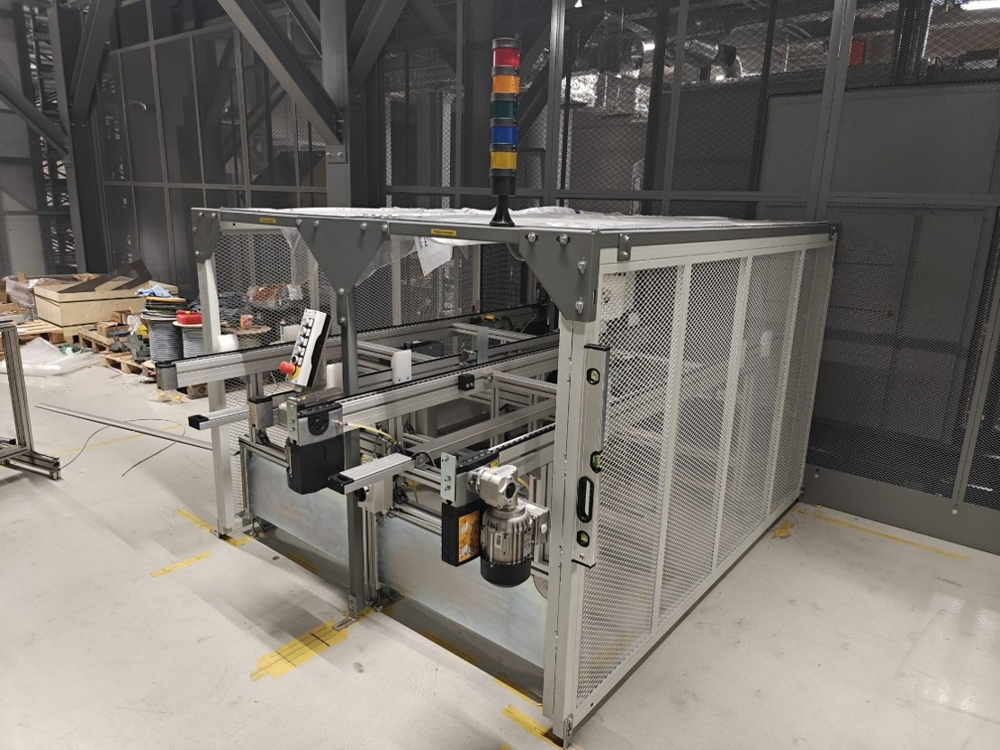
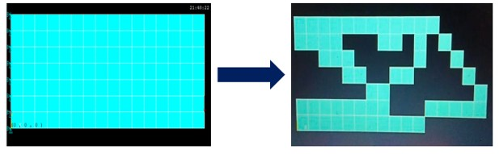
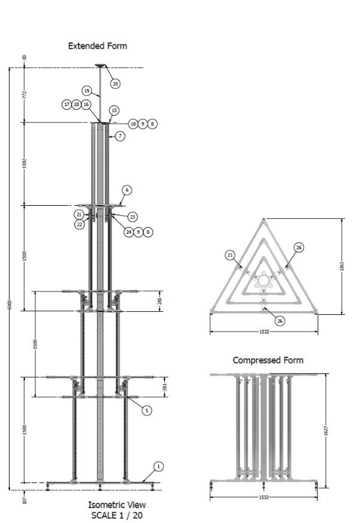
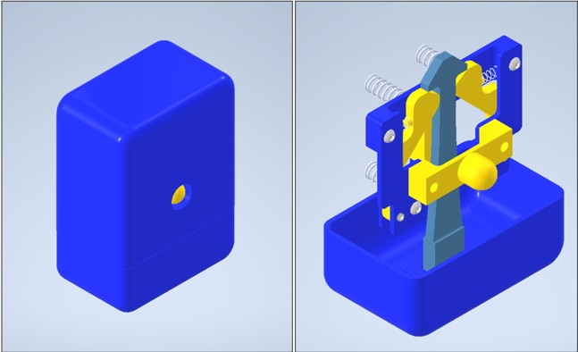
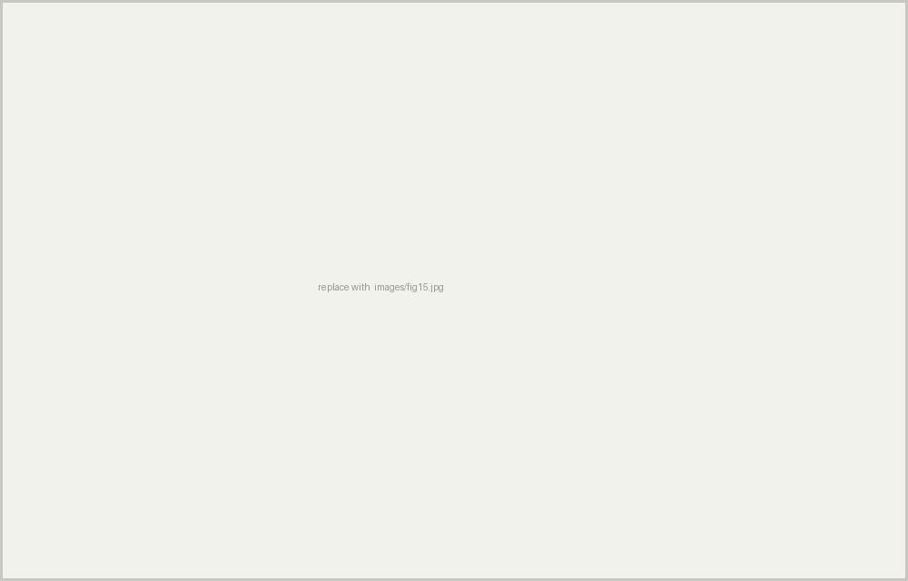
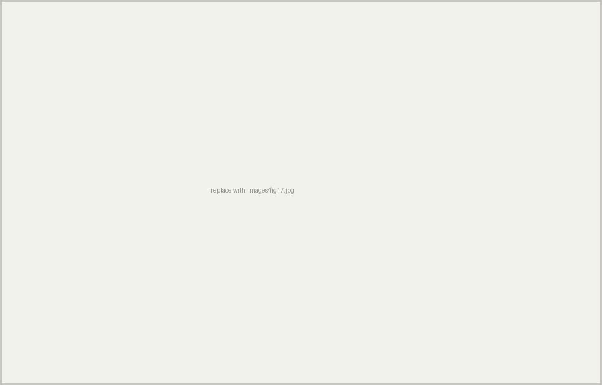

Fikret Can Ozenli
Portfolio — Mechanical Engineer · Design, Simulation & Installation
- Discipline
- Mechanical design
- Location
- Leuven, Belgium
- Phone
- +32 456 73 72 33
- Profile
Projects
-

Battery Production Line Equipment
Conveyor systems and water cooling for battery test facilities, designed and then installed on customer sites.
Professional -

AI Controller for EV Torque Transition
Replacing hand-calibrated torque maps with a reinforcement learning agent, validated by co-simulation.
Controls -

FEA / Topology Optimisation Routine
An APDL routine that iteratively removes unstressed material from a component while preserving load paths.
Simulation -

Neural Network for Joint Stiffness Prediction
Predicting the stiffness of complex tubular joints from their force–deflection response, using a network built from scratch in Python.
Research -

GNSS Base Station — 6 m Deployable Mast
A 6 m mast under 40 kg that assembles by hand without tools and packs into a pickup bed.
Structure -

Push-to-Release Snap Lock — Mechanism Design
A latch holding tension that releases consistently regardless of applied load, using an out-of-plane release path.
Mechanism -

Push-Push Latch — Mechanism Design
A latch that locks on the first push and releases on the second, developed from first principles rather than copied.
Mechanism -

Adjustable Phone Stand
Holding a phone upright while it charges, with independent adjustment of incline and orientation.
Mechanism